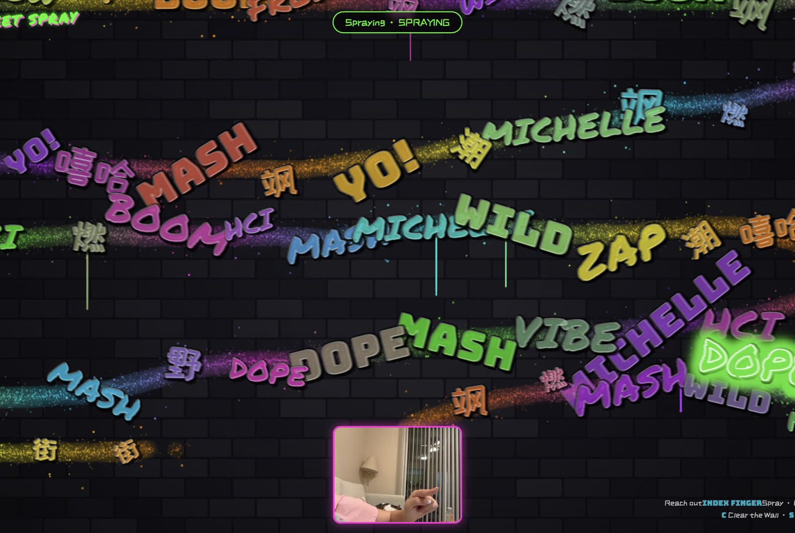
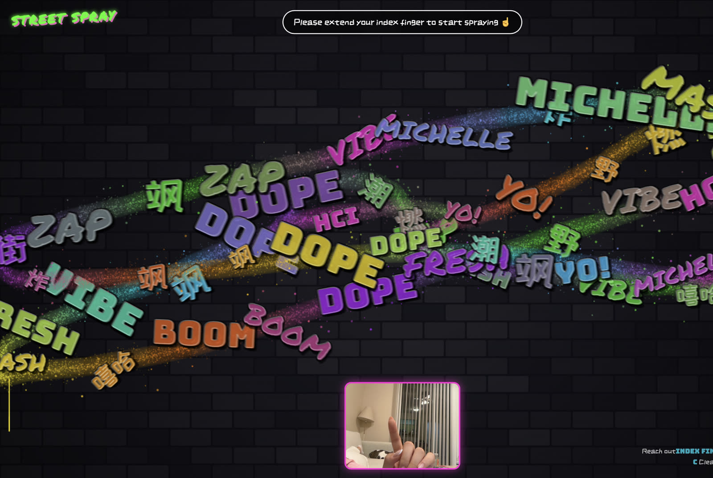
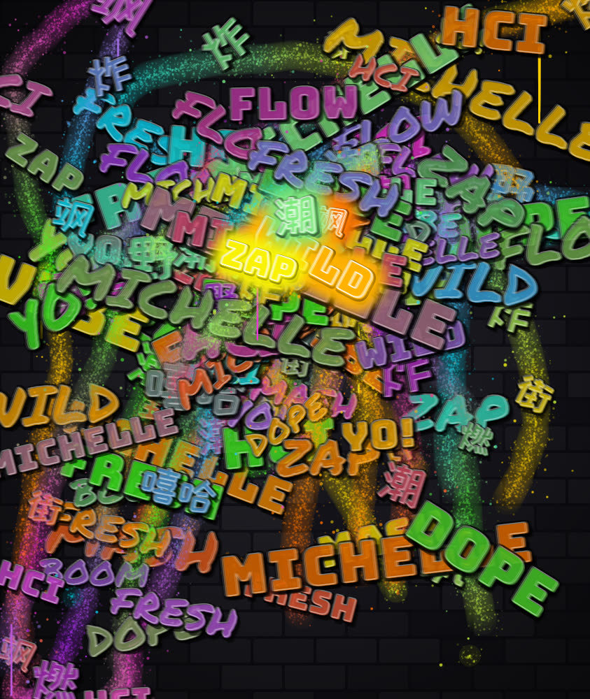
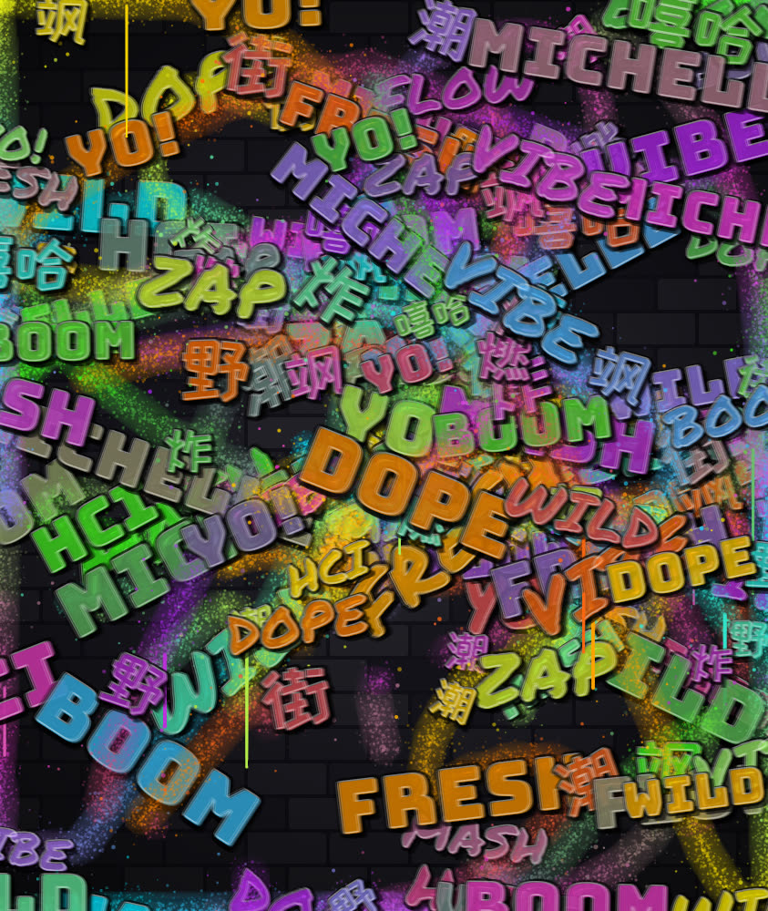

Hold up one index finger and the screen becomes a street wall you can tag in mid-air. A gesture-painting experiment built with nothing but a webcam and a browser.
Street Spray is a small experiment from everyday life: no controllers, no extra hardware, just a laptop's built-in camera turning the motion of a hand in the air into spray-paint strokes on screen.
The system tracks the tip of the index finger in real time and emits paint particles with a randomized spread at that point. The color drifts through a set of neon hues as the hand travels, and every stretch of movement "sprays" out a rotated graffiti word. Each word pops in, holds, fades, and leaves a faint ghost on the wall, so the surface keeps getting denser and more layered the longer you paint.
The whole piece is a single HTML file. Every dependency loads from a CDN, so there is no build step and no server.
Street graffiti is a physical act. The swing of the arm, the distance between can and wall, the pooling and dripping of paint when you pause: the stroke is a record of the movement itself. On screen, drawing usually shrinks down to small nudges of a mouse or trackpad.
I wanted to see whether I could bring that full-body feeling back to the screen with almost no barrier to entry: nothing to wear, nothing to install, just open a page and raise a hand. It was also a small exercise in natural user interfaces, built around one question: without a button, how does someone know when they are painting and when they have stopped?
Every frame passes through these five stages in order. Detection runs in the MediaPipe callback and rendering runs in the p5.js draw() loop; the two sides share only a single fingertip coordinate.
getUserMedia streams the webcam; the preview is flipped horizontally like a mirror.
640 × 480 inputMediaPipe Hands returns 21 hand landmarks. Landmark 8 becomes the nozzle.
landmark[8] · index tipFlip the x-axis, trim a 10% margin, and stretch to full screen so the hand never has to reach the frame edge.
margin = 0.10Exponential smoothing filters detection jitter while keeping the cursor responsive.
lerp α = 0.45Path interpolation, particles, drips and word animation, composited in layers.
wall → paint → words → cursorThe hardest problem in mid-air input is that there is no "pen up". I use hand pose to tell them apart: compare how far the fingertip and the middle knuckle each sit from the wrist. An extended index finger sprays; a fist pauses. The cursor switches between a solid colored ring and a dashed white ring, so the state is always visible.
When a hand first enters the frame, the cursor jumps straight to it instead of easing over, so no stray line gets dragged from where the hand last left.
// Tip clearly farther from the wrist than the knuckle → finger extended const dTip = Math.hypot(tip.x - wrist.x, tip.y - wrist.y); const dPip = Math.hypot(pip.x - wrist.x, pip.y - wrist.y); isSpraying = dTip > dPip * 1.15;
Each burst has three layers: fine mist scattered on a Gaussian distribution (dense at the center, sparse at the edge), a few large splatters that land outside the nozzle radius, and a very faint base haze that gives the stroke body.
Faster movement widens the spray. When the hand holds still, paint keeps building up and is more likely to run down the wall as a drip. These are the physical traits of a real can, reduced to a handful of probability rules.
// Gaussian radius: dense core, soft falloff const rad = abs(randomGaussian(0, r * 0.38)); // 25% chance of a splatter outside the nozzle if (random() < 0.25) splatter(r * 0.9, r * 2.2); // Drips are 6× likelier when moving slowly if (random() < (speed < 3 ? 0.012 : 0.002)) addDrip();
Camera detection runs at a limited frame rate, so a quick swipe can put two consecutive samples a hundred pixels apart. The renderer fills the gap with a spray point every 6 pixels, keeping the line continuous. Color progress and word emission both advance with distance traveled rather than time, so the more you paint, the more the wall changes.
const steps = max(1, ceil(d / 6)); for (let s = 1; s <= steps; s++) { sprayAt(lerp(a.x, b.x, s / steps), lerp(a.y, b.y, s / steps), d); } colorT += d * 0.0025; // hue drifts with distance
Every 160 pixels of travel sprays out a word with a random rotation and typeface. Its 1.6-second life has three phases: the first 25% pops in on an overshoot curve, the middle holds, and the last 40% fades while scaling up slightly. When it expires it is written into the paint layer at 70/255 opacity, becoming part of the wall's texture.
The word bank mixes English slang with Chinese characters, plus a personal signature, MICHELLE, as the piece's tag.
// Lifecycle: pop → hold → fade if (t < 0.25) s = easeOutBack(t / 0.25); else if (t < 0.6) s = 1; else a = lerp(255, 70, k); // On expiry, stamp a ghost into the paint layer drawGraffitiText(paintLayer, ft, 1, 70, false);
The canvas is a procedurally generated dark brick wall: offset bricks, randomized brightness, fine grain noise and a vignette. Against that ground, saturated neon can actually glow. Words get a heavy black outline, an offset drop shadow and a thin white highlight to suggest the thickness of wet paint.



